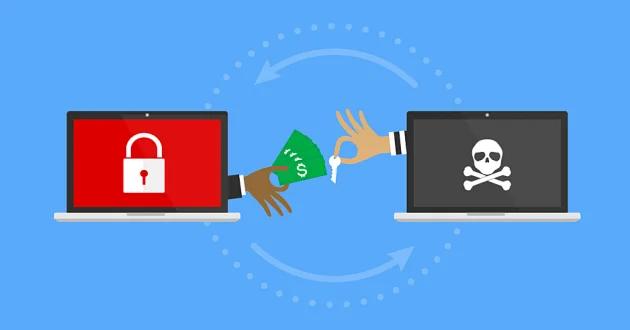
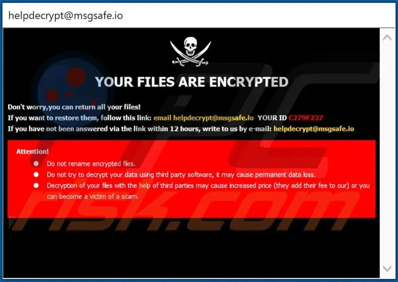

Main Section
Welcome to Pro-tect M33, where our primary focus is shielding you from the relentless threats posed by scams in the digital landscape. In a world where phishing attempts, identity theft, and other fraudulent activities are on the rise, our commitment is to serve as your unwavering guardian against these evolving cyber threats.

At Pro-tect M33, we set ourselves apart by offering more than just reactive solutions. We empower you with the knowledge and tools necessary to proactively secure yourself against scams. Benefit from expert insights, delve into a wealth of educational resources, and leverage cutting-edge prevention tools crafted to counter the dynamic tactics employed by cybercriminals.
Embark on your journey to a scam-free digital existence right here at Pro-tect M33. Our extensive library of educational resources includes articles, guides, and real-world case studies. Join a community of individuals and businesses united in the collective pursuit of online safety. Together, let's fortify our defenses, share experiences, and collaboratively build a safer online environment. Pro-tect M33 is dedicated to prioritizing your security – trust us to be your steadfast partner in the ongoing fight against scams.
Phishing Scams

Pheieeeeeeeeshing scams are sophisticated traps, targeting unsuspecting individuals who inadvertently disclose sensitive information. Common tactics include the use of deceptive emails and messages, where phishers pose as trustworthy entities, employing urgency to prompt swift responses. They also create fake websites mirroring legitimate ones, enticing users to input confidential details. Social engineering plays a pivotal role, with cybercriminals assuming personas of authority figures or acquaintances to manipulate individuals into willingly sharing sensitive information.
In addition to the proactive prevention measures mentioned earlier, it is crucial to emphasize the significance of verifying the legitimacy of websites. Before entering any personal or sensitive information, carefully scrutinize the website's authenticity. Legitimate websites typically have secure and recognizable URLs. Be cautious of misspelled domains, unusual variations, or subtle discrepancies that may indicate a fraudulent site.

Always navigate directly to websites through official channels, avoiding links provided in emails or messages, especially those that appear suspicious. Taking these extra precautions and ensuring the legitimacy of the website you interact with adds an essential layer of protection against falling victim to phishing scams. Remember, a few moments spent verifying the legitimacy of a site can save you from potential cyber threats and safeguard your online security. Stay vigilant, stay informed, and navigate the digital landscape with confidence.
Fake Website

Click the Picture to be Transported to a Fake Phishing Website
Randsomeware
Ransomware, a formidable and evolving cybersecurity threat, poses a significant risk to individuals and businesses alike. Operating as malicious software, it encrypts files or entire systems, demanding a ransom for the decryption key. At Pro-tect M33, we recognize the importance of understanding the intricacies of ransomware to empower users in navigating the digital landscape securely.
Ransomware is a malicious form of software designed to infiltrate computer systems and encrypt files, rendering them inaccessible to users. This type of cyber threat operates on the principle of extortion, wherein the attackers demand a ransom – often in cryptocurrency – in exchange for providing the decryption key. Ransomware can be delivered through various means, including phishing emails, malicious attachments, or compromised websites. Once activated, it swiftly encrypts the victim's files, leaving them locked and unusable. The perpetrators then present a ransom demand, threatening permanent data loss or exposure if payment is not made within a stipulated timeframe. Ransomware attacks have become increasingly sophisticated, targeting individuals, businesses, and even critical infrastructure, highlighting the crucial need for robust cybersecurity measures and user awareness.
The landscape of ransomware attacks is continually changing, with cybercriminals employing advanced techniques and targeting critical infrastructure. This evolving threat necessitates constant vigilance and adaptability in cybersecurity measures. Our insights into emerging trends in ransomware attacks provide users with a comprehensive overview, arming them with the knowledge needed to stay one step ahead of cyber threats.
Preventing and mitigating ransomware attacks requires a multifaceted approach. Pro-tect M33 advocates for proactive measures, including robust backup solutions, regular software updates, and comprehensive employee training. By adopting a multi-layered security strategy, incorporating advanced threat detection and response planning, individuals and businesses can significantly enhance their resilience against the rising tide of ransomware threats.
You were just a part of a Phising Scam...

Falling prey to a phishing scam can unleash a cascade of potential dangers that extend beyond the immediate impact of unauthorized account access. Phishers often exploit the trust individuals place in seemingly authentic messages or websites, using deceptive tactics to harvest sensitive information. Once armed with this data, cybercriminals can engage in identity theft, commit financial fraud, or launch targeted attacks. The consequences may include compromised online accounts, financial losses, and even reputational damage. It's not just about the immediate threat; the aftermath of a successful phishing attempt can linger, requiring extensive efforts to reclaim control and restore your digital security.
To shield yourself from these risks, explore the dedicated "Phishing Scams" section on the left side. This resource provides comprehensive information on the evolving strategies employed by cybercriminals, empowering you to recognize and thwart phishing attempts effectively. Discover proactive steps you can take to fortify your defenses, including adopting secure online practices and leveraging technological tools. Education is your greatest asset in the ongoing battle against phishing scams. Click on the left side to delve deeper into this crucial topic and arm yourself with the knowledge needed to navigate the digital landscape securely.